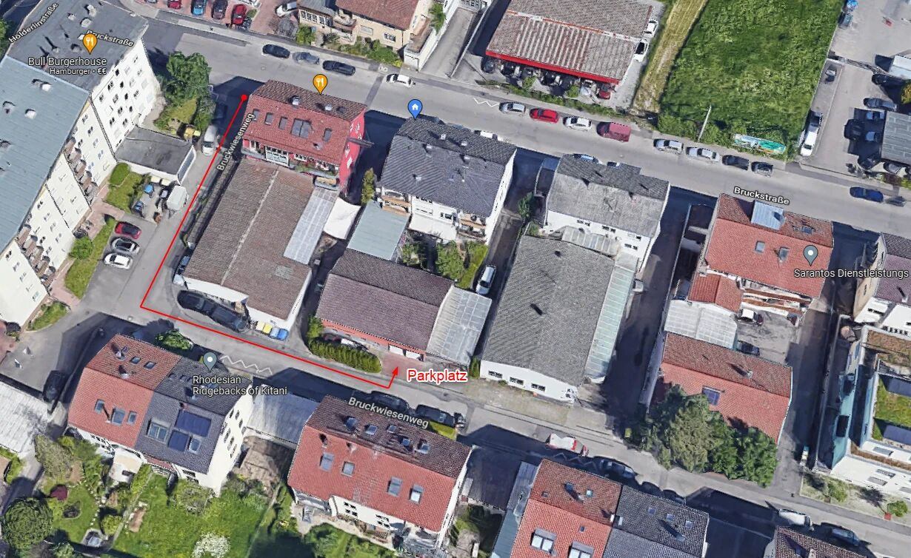
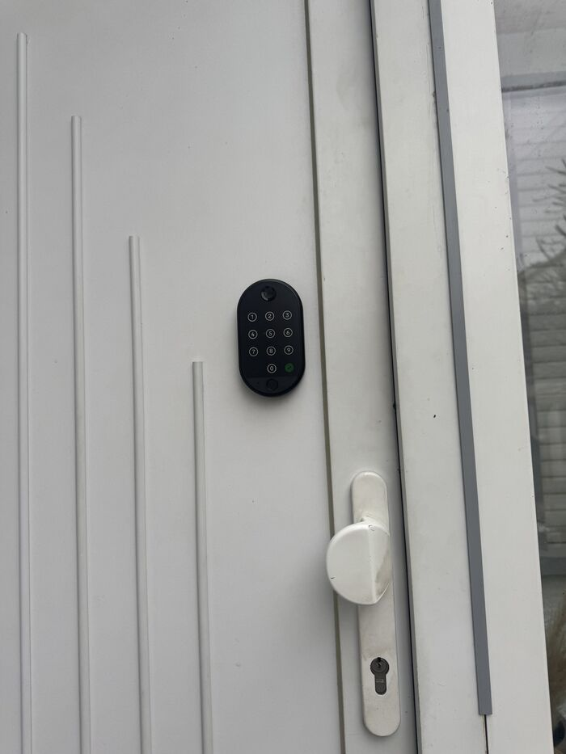

请把这里当作自己的家！我们希望您在这里度过美好的时光，因此整理了最重要的信息。如有任何问题或建议，请随时联系我们——祝您在费尔巴赫玩得开心！
Anita & Johannes
📄 PDF 指南（德文/英文）抵达与入住
公寓位于后楼（Bruckstraße 22/1）。车道、停车位和入口都在房子后面，需从 Bruckwiesenweg 12 进入——而不是从 Bruckstraße。
📍🅿️ 导航目的地：Bruckwiesenweg 12如何找到我们
- 沿 Bruckstraße 行驶，在红色房子（Da Patrizia 餐厅）的拐角处转入 Bruckwiesenweg。

驾车：Bruckstraße（上方）→ Bruckwiesenweg → 停车位（红线） - 沿 Bruckwiesenweg 前行，直到道路向左拐弯。拐弯后，您会在左侧看到一栋带两扇白色车库门的红色建筑。停车：请将车停在铺砌地面上，双车库左侧车库门的前面（房车旁边）——这扇门可以完全挡住。右侧车库门必须始终保持畅通。

Bruckwiesenweg：带两个白色车库的红色建筑 - 车库右侧有一扇带雨棚的金属大门。

车库右侧的大门 - 金属大门是开着的——直接穿过即可。然后步行沿着白色房子旁的石板小路，经过种植箱，走到带台阶和玻璃雨棚的白色大门。

沿房子通往大门的小路 
带玻璃雨棚的白色大门 - Yale 密码键盘位于大门右上方：轻触键盘使其亮起 → 输入您的个人密码 → 按绿色 ✓ 确认 → 推开门。密码可在 Airbnb 应用中您的行程（入住说明）里找到，仅在预订期间有效。

Yale 键盘：输入密码，按 ✓ 确认 - 走廊正前方贴有 “Air BnB” 标牌的门就是您的公寓。您抵达时钥匙插在门锁上。

走廊里：“Air BnB”门


俯瞰图

乘坐公交和火车：见交通。公交站 Cannstatter Platz 步行仅需几分钟。
Wi-Fi
公寓与住宿规则
- 整个公寓内禁止吸烟。
- 禁止举办派对或活动。
- 22:00 至 7:00 为安静时间——在院子里和去停车的路上也请保持安静。
实用信息
- 暖气与通风：请用暖气片上的温控旋钮调节温度（3 档 ≈ 20 °C）。冬季请短时间彻底通风（窗户完全打开 5 分钟），不要长时间保持窗户斜开。
- 设施：公寓没有厨房——但为您准备了冰箱、电水壶、微波炉以及餐具和刀叉。
- 咖啡：早晨可以使用 Senseo 咖啡机。我们通常会准备几个咖啡包供您开始使用——如果住得较久，最好购物时顺便买一包（每家超市都有）。
- 缺少什么？请直接问我们——任何事情都可以。我们很乐意帮忙！
- 垃圾：退房时请将垃圾直接留在公寓内——我们会处理。
- 德国所有超市周日都不营业——最好在周六购物。
购物、面包店与餐饮
★ = 我们调查时的 Google 评分（评论数）——点击“地图”查看最新评分和营业时间。距离从公寓算起。
超市与日化店


面包店


餐饮


我们的推荐——为您量身打造
适合家庭
德国最美丽的动物园之一，有许多动物馆和温室——即使天冷或下雨也能玩得很开心。
室内泳池，设有滑梯、桑拿以及为小朋友新开的丛林世界（2026 年夏季开放）。室外泳池冬季关闭。
平坦无障碍的环形步道（约 4 公里），穿过葡萄园——推婴儿车也很轻松，可俯瞰费尔巴赫。
适合情侣
葡萄酒步道（约 4.3 公里）从费尔巴赫葡萄农合作社的 Neue Kelter（Kappelbergstraße 48）出发，穿过葡萄园通往观景点 “Blick über Fellbach”。每月第一个周六那里有开放式品酒会。
这座新古典主义礼拜堂坐落在葡萄园之上，是俯瞰内卡河谷的最佳地点之一。礼拜堂本身11 月至 3 月关闭——但全年都值得来散步看风景。
室内外温暖的矿泉水池及桑拿——尤其在冬季，令人非常放松。
埃斯林根拥有木桁架老城和城堡（约 20 分钟）；路德维希堡宫是德国最大的巴洛克宫殿之一（约 25 分钟，冬季提供导览）。
适合独自出行与商务旅客
从费尔巴赫火车站乘 S2 或 S3 约 12–15 分钟即可到达斯图加特中央火车站——王宫广场、国王大街、市场大厅和国立美术馆都在步行范围内。
汽车爱好者的必游之地，每个博物馆 2–3 小时即可轻松参观。两馆周一均闭馆；保时捷博物馆另于 2027 年 1 月 18 日至 2 月 1 日因翻修关闭。
世界上第一座钢筋混凝土电视塔——下班后去也很合适：每天 10–22 点，最后入场 21:30。
经 Kappelberg 穿过葡萄园和森林到观景塔的环线——约 13.7 公里，约 4 小时。冬季请早出发（约 17 点天黑），并注意林中路面结冰。
费尔巴赫及周边活动
更新于 2026 年 11 月 22 日 · 仅供参考——出发前请向主办方确认。
- 2026.11.28–12.22费尔巴赫圣诞市场
位于 Lutherkirche 教堂和市政厅周围，设有舞台和儿童活动。周一至周三 16–20 点，周四至周日 12–20 点，免费入场（预计 12 月 22 日结束）。费尔巴赫市中心 - 2026.11.25–12.23斯图加特圣诞市场
欧洲最古老、规模最大的圣诞市场之一，约 250 个摊位。周日至周四 11–21 点，周五和周六 11–22 点。斯图加特市中心 · 乘 S-Bahn 约 15 分钟 - 2026.11.24–12.22埃斯林根中世纪及圣诞市场
周日至周四 11–20:30，周五和周六 11–21:30。Esslingen am Neckar · 约 20 分钟 - 2026.11.24–12.22路德维希堡巴洛克圣诞市场
巴洛克风格背景下约 150 个摊位，每天 11–21 点。路德维希堡 · 约 25 分钟 - 至 2027 年 1 月上/中旬Wilhelma 圣诞灯光花园
晚间穿过历史公园的灯光步道。请在线购票（christmas-garden.de）。Stuttgart-Bad Cannstatt - 每月第一个周六开放式品酒会——Fellbacher Weingärtner
近期日期：2026 年 12 月 5 日，2027 年 1 月 2 日、2 月 6 日和 3 月 6 日。Neue Kelter, Kappelbergstraße 48, Fellbach - 2027.1.20 · 20:00《哈克贝利·费恩》 Herbert Knaup 朗读演出（德语）Schwabenlandhalle Fellbach
- 2027.2.7 · 19:00《天鹅湖》——Grand Classic BalletSchwabenlandhalle Fellbach
- 2027.2.20–21第 29 届葡萄酒展 “Die Besten aus dem Remstal”
一个周末汇聚约 50 家酒庄。Alte Kelter, Kelterweg 7, Fellbach - 2027.3.13 · 20:00Azzurro——意大利流行音乐秀Schwabenlandhalle Fellbach
- 2027.3.20Bobby & Max——现场广播剧，儿童场，德语（13:00 和 18:00）Schwabenlandhalle Fellbach
公交与火车出行
- 公交：站点 Fellbach Cannstatter Platz（步行几分钟）——有公交车前往火车站等地。
- S-Bahn（城郊列车）：费尔巴赫火车站（Fellbach Bahnhof）——S2 和 S3 开往斯图加特中央火车站（约 12–15 分钟）、机场/展览中心，以及 Schorndorf 或 Backnang 方向。去斯图加特最方便的方式。
时刻表和车票：VVS 或 DB Navigator 应用——也会显示当前施工信息。Deutschlandticket（德国月票）适用于所有本地公共交通。
🚗 斯图加特是低排放区：汽车需要贴绿色环保标签（“Umweltplakette”）。
VVS 路线查询 ↗ VVS路线查询vvs.de
VVS路线查询vvs.de退房
请于 11:00 前退房。离开前请：
希望您在这里度过了愉快的时光！如能在 Airbnb 上留下评价，我们将非常高兴。⭐
联系方式与紧急情况
最快的联系方式是通过 Airbnb 应用或电话：
紧急电话
- 消防与急救：112
- 警察：110
- 非工作时间医生：116 117
- 值班药店：aponet.de——药店查询